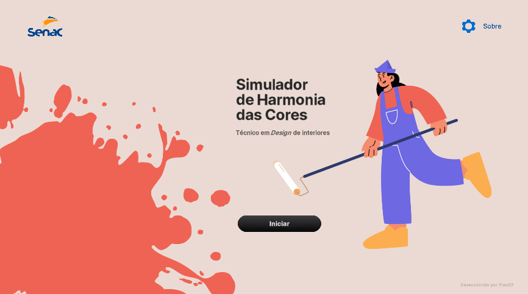
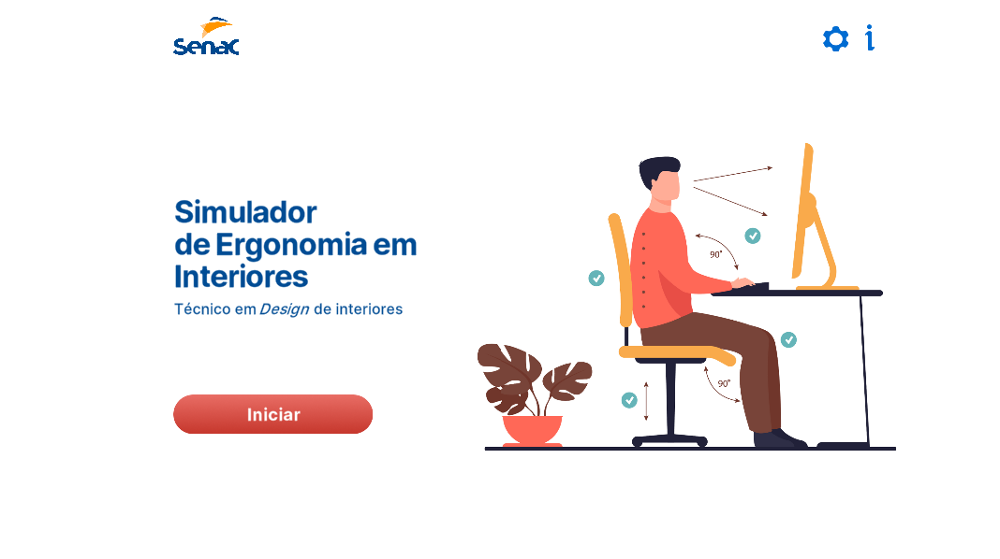
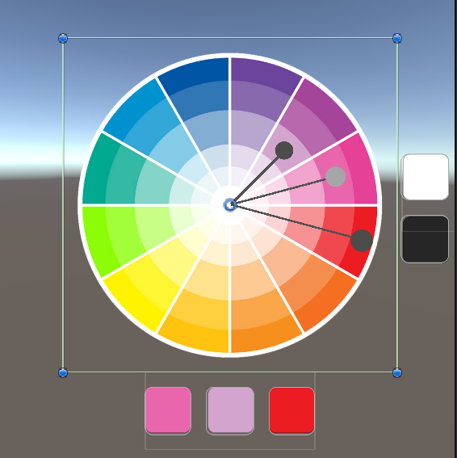
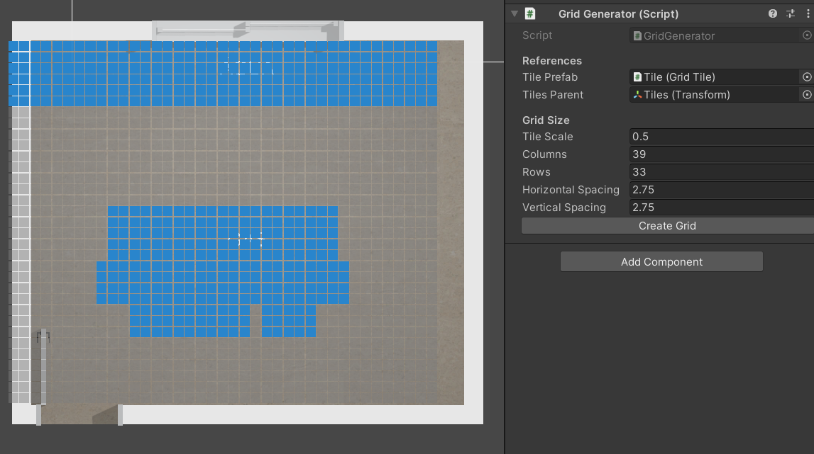
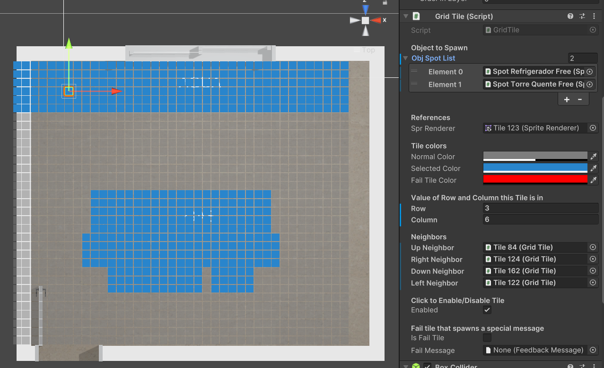
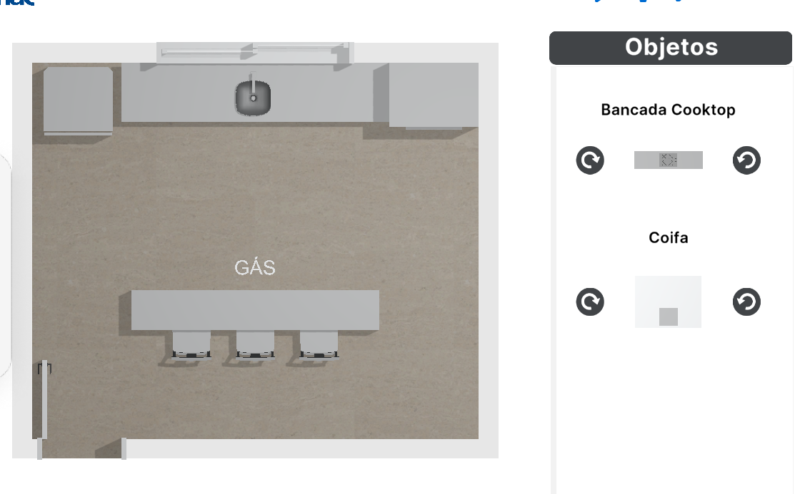

Web apps for the education institution Senac.
Project Information
Company: Plan XP Marketing Digital Ltda
Client: Senac
Platforms: Web
Team Members: One 3D artist, one UI/UX artist
My Role: Unity Developer


My first two projects while working at Plan XP. These are apps made in unity that run
directly on the web browser.
The objective of the apps was to teach Senac's Interior Design students about colors
and furniture placement for real life environments.
Senac Simulador de Harmonia das Cores is the first app I made for PlanXP. It's a simple application that allows the user to select colors and paint parts of the furnitures and walls.

The color picker is an actual image object with a script I coded that handles the color
picked and draws the gizmos that help visualize the chromatic circle selected.
Unity places UI objects inside rectangles, like the one the color picker
is inside of, inside my script I access a Unity UI library method that calculates the
mouse position relative to the rectangle, extracting information of the pixel clicked
if any exists.
Link to a build of the Harmonia das Cores project you can run on your web browser.
Senac Simulador de Ergonomia em Interiores is the second project I made, which is
about placing objects at the correct spots and also facing the right direction which
is supposed to follow the rules of ergonomics.
Whenever you place an object, a pop up appears telling you if it's correct, wrong or
if you placed correctly but with a wrong rotation.

To define the valid object placing areas, I made a script that creates a grid of
cells by inputting the required information inside the editor UI and clicking the
Create button.
I can manually define the valid cells where the user can drop the furniture
objects.

Every tile has information of the objects they accept as it is intentional that only
certain objects are allowed on each spot.
Whenever an object is placed, a script checks if it is valid and if the rotation is
correct by comparing to the entries of an array of valid rotation angles for each
object.

A simple calculation is done to determine if the
mouse position is intersecting a valid tile when the mouse button is released.
Whenever an object is placed, a script checks if it is valid and if the rotation is
correct by comparing with an array of valid rotation angles for each spot.
Looking back after all those years, I think it would have been way more efficient to have
individual Object Spot classes where each instance has information about their own
valid tiles, rotations and objects that can be place instead of leaving all this info
inside each individual tile. Oh well, living and learning!
Link to a build of the Ergonomia project you can run on your web browser.